8. 多操作数加法¶
Multi-operand Addition
“If A equals success, then the formula is A = X + Y + Z. X is work. Y is play. Z is keep your mouth shut.” — ALBERT EINSTEIN
“如果 A 等于成功，那么公式就是 A = X + Y + Z。X 就是工作。 Y 是玩耍。 Z请闭嘴。” — 艾尔伯特.爱因斯坦
In Chapters 6 and 7,we covered several speedup methods for adding two operands. Our primary motivation in dealing with multi-operand addition in this chapter is that both multiplication and inner-product computation reduce to adding a set of numbers, namely, the partial products or the component products. The main idea used is that of deferred carry assimilation made possible by redundant representation of the intermediate results.
在第 6 章和第 7 章中，我们介绍了几种将两个操作数相加的加速方法。 我们在本章中处理多操作数加法的主要动机是乘法和内积计算都减少为添加一组数字，即部分积或分量积。 使用的主要思想是通过中间结果的冗余表示来实现延迟进位同化。
- 8.1 基于二操作数加法器 USING TWO OPERAND ADDERS
- 8.2 进位保留加法器 CARRY-SAVE ADDERS
- 8.3 华莱土树与达达树 WALLACE AND DADDA TREES
- 8.4 并行计数器与并行压缩器 PARALLEL COUNTERS AND COMPRESSORS
- 8.5 多个有符号数之和 ADDING MULTIPLE SIGNED NUMBERS
- 8.6 多操作数模加法器 MODULAR MULTIOPERAND ADDERS
8.1 基于二操作数加法器¶
Multi-operand addition is implicit in both multiplication and computation of vector inner products (Fig. 8.1). In multiplying a multiplicand a by a k-digit multiplier x, the k partial products xia must be formed and then added. For inner-product computation, the component product terms p(j) = x(j)y(j) obtained by multiplying the corresponding elements of the two operand vectors x and y, need to be added. Computing averages (e.g., in the design of a mean filter) is another application that requires multioperand addition.
多操作数加法隐含在乘法和向量内积的计算中（图 8.1）。在将被乘数a乘以k位乘数x时，必须形成k个部分积\(x_ia\)然后相加。对于内积计算，需要将两个操作数向量 x 和 y 的相应元素相乘获得的分量积项 \(p(j) = x(j)y(j)\) 相加。计算平均值（例如，在均值滤波器的设计中）是另一个需要多操作数加法的应用。
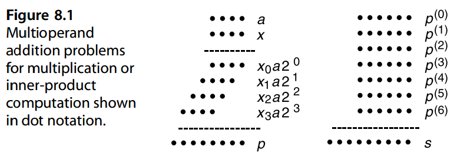
We will assume that the n operands are unsigned integers of the same width k and are aligned at the least-significant end, as in the right side of Fig. 8.1. Extension of the methods to signed operands are discussed in Section 8.5. Application to multiplication is the subject of Part III.
我们假设n个操作数是宽度k相同的无符号整数，并且在最低有效端对齐，如图8.1右侧所示。有符号操作数的方法将在 8.5 节中讨论。乘法的应用是第三部分的主题。
Figure 8.2 depicts a serial solution to the multioperand addition problem using a single two-operand adder. The binary operands x(i), i = 0, 1, · · · , n − 1, are applied, one per clock cycle, to one input of the adder, with the other input fed back from a partial sum register. Since the final sum can be as large as n( 2 k − 1 ), the partial sum register must be log (*2 *n 2 k − n + 1 ) ≈ k + log2 n bits wide.
图 8.2 描述了使用单个二操作数加法器解决多操作数加法问题的串行解决方案。每个时钟周期将二进制操作数 \(x^{(i)}\)、\(i = 0、1、····、n − 1\) 应用于加法器的一个输入，另一输入从部分和寄存器反馈。由于最终的和可以与 \(n( 2^k − 1 )\) 一样大，因此部分和寄存器必须是 \(\log_2 (n 2^k − n + 1 ) \approx k + \log_2 n\) 位宽。
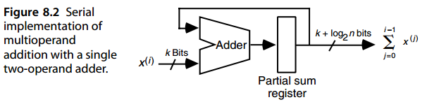
Assuming the use of a logarithmic-time fast adder, the total latency of the scheme of Fig. 8.2 for adding n operands of width k is
假设使用对数时间快速加法器，图 8.2 的方案用于添加 n 个宽度为 k 的操作数的总延迟为
\(T_{serial−multi−add} = O (n \log (k + \log n))\)
Since k + log n is no less than max (k, log n) and no greater than max ( 2 k, 2 log n), we have log (k + log n) = O ( log k + log log n) and
由于 \(k + \log n\) 不小于 \(max (k, \log n)\) 且不大于 \(max (2 k, 2 \log n)\)，所以我们有 \(\log (k + \log n) = O ( \log k + \log \log n)\) 和
\(T_{serial−multi−add} = O (n \log k + n \log \log n)\)
Therefore, the addition time grows superlinearly with n when k is fixed and logarithmically with k for a given n.
因此，当 k 固定时，加法时间随 n 超线性增长，并且对于给定 n 与 k 呈对数增长。
One can pipeline this serial solution to get somewhat better performance. Figure 8.3 shows that if the adder is implemented as a four-stage pipeline, then three adders can be used to achieve the maximum possible throughput of one operand per clock cycle. Note that the presence of latches is assumed after each of the four adder stages and that a delay block simply represents a null operation followed by latches. The operation of the circuit in Fig. 8.3 is best understood if we trace the partially computed results from left to right. At the clock cycle when the i th input value x(i) arrives from the left and the sum of input values up to x(i−12 ) is output at the right, adder A is supplied with the two values x(i) and x(i−1 ). The partial results stored at the end of adder A’s four stages correspond to the computations x(i−1 ) + x(i−2 ), x(i−2 ) + x(i−3 ), x(i−3 ) + x(i−4 ), and x(i−4 ) + x(i−5 ), with the latter final result used to label the output of adder A. Other labels attached to the lines in Fig. 8.3 should allow the reader to continue this process, culminating in the determination of partial/final results of adder C. Even though the clock cycle is now shorter because of pipelining, the latency from the first input to the last output remains asymptotically the same with h-stage pipelining for any fixed h.
人们可以通过流水线化这一串行解决方案来获得更好的性能。图8.3表明如果加法器实现为四级流水线，则可以使用三个加法器来实现每个时钟周期一个操作数的最大可能吞吐量。请注意，假设在四个加法器级中的每一个之后都存在锁存器，并且延迟块仅表示锁存器后面的空操作。如果我们从左到右追踪部分计算结果，就可以最好地理解图 8.3 中电路的操作。在时钟周期，当第 \(i\) 个输入值 \(x^{(i)}\) 从左侧到达并且直到 \(x^{(i−12 )}\) 的输入值之和在右侧输出时，加法器 A 被提供两个值 \(x^{(i)}\) 和 \(x^{(i−1)}\)。加法器 A 四个阶段末尾存储的部分结果对应于计算 \(x^{(i−1)} + x^{(i−2)}\)、\(x^{(i−2)} + x^{(i−3)}\)、\(x^{(i−3)} + x^{(i−4)}\) 和 \(x^{(i−4)} + x^{(i−5)}\) ，后者的最终结果用于标记加法器 A 的输出。其他附加到图 8.3 中行的标签应该允许读者继续这个过程，最终确定加法器 C 的部分/最终结果。尽管由于流水线操作，时钟周期现在更短，但对于任何固定的 h，从第一个输入到最后一个输出的延迟与 \(h\) 级流水线保持渐近相同。
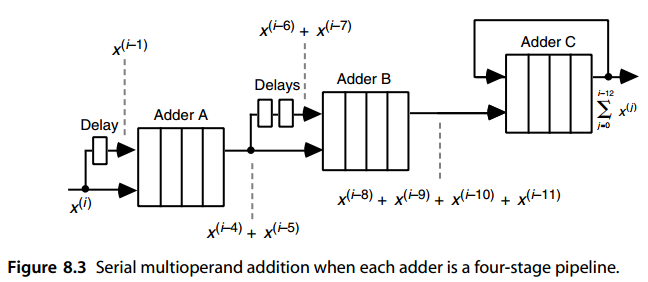
Note that the schemes shown in Figs. 8.2 and 8.3 work for any prefix computation involving a binary operator ⊗, provided the adder is replaced by a hardware unit corresponding to the binary operator ⊗. For example, similar designs can be used to find the product of n numbers or the largest value among them.
请注意，图1和2中所示的方案。 8.2 和 8.3 适用于涉及二元运算符 ⊗ 的任何前缀计算，前提是加法器被替换为与二元运算符 ⊗ 相对应的硬件单元。例如，类似的设计可用于求n个数字的乘积或其中的最大值。
For higher speed, a tree of two-operand adders might be used, as in Fig. 8.4. Such a binary tree of two-operand adders needs n − 1 adders and is thus quite costly if built of fast adders. Strange as it may seem, the use of simple and slow ripple-carry (or even bit-serial) adders may be the best choice in this design. If we use fast logarithmic-time adders, the latency will be
为了获得更高的速度，可以使用二操作数加法器树，如图 8.4 所示。这种双操作数加法器的二叉树需要 \(n − 1\) 个加法器，因此如果由快速加法器构建，成本相当高。尽管看起来很奇怪，但使用简单且缓慢的纹波进位（甚至位串行）加法器可能是该设计中的最佳选择。如果我们使用快速对数时间加法器，则延迟将为
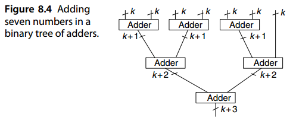
The preceding equality can be proven by considering the two cases of log2 n < k and log2 n > k and bounding the right-hand side in each case. Supplying the needed details of the proof is left as an exercise. If we use ripple-carry adders in the tree of Fig. 8.4, the delay becomes
可以通过考虑 \(\log_2 n < k\) 和 \(\log_2 n > k\) 两种情况并在每种情况下限制右侧来证明上述等式。提供证明所需的详细信息留作练习。如果我们在图 8.4 的树中使用纹波进位加法器，则延迟变为
\(T_{tree−ripple−multi−add} = O (k + \log n)\)
which can be less than the delay with fast adders for large n. Comparing the costs of this and the preceding schemes for different ranges of values for the parameters k and n is left as an exercise.
对于大 \(n\)，这可以小于快速加法器的延迟。对于参数 \(k\) 和 \(n\) 的不同值范围，比较该方案和前面的方案的成本留作练习。
Figure 8.5 shows why the delay with ripple-carry adders is O (k + log n). There are log2 n levels in the tree. An adder in the ( i + 1)th level need not wait for full carry propagation in level i to occur, but rather can start its addition one full-adder (FA) delay after level i. In other words, carry propagation in each level lags 1 time unit behind the preceding level. Thus, we need to allow constant time for all but the last adder level, which needs O (k + log n) time.
图 8.5 显示了为什么纹波进位加法器的延迟为 \(O (k + \log n)\)。树中有 \(\left \lceil \log_2 n \right \rceil\) 层。第 \(( i + 1)\) 级中的加法器不需要等待第 i 级中的全进位传播发生，而是可以在第 \(i\) 级之后一个全加器 (FA) 延迟后开始其加法。换句话说，每一级的进位传播落后于前一级1个时间单位。因此，我们需要为除最后一个加法器级别之外的所有级别留出恒定时间，这需要 \(O (k + \log n)\) 时间。
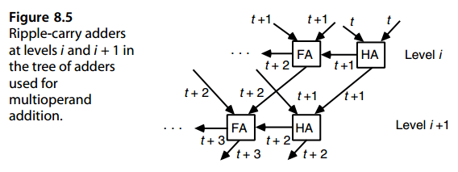
Can we do better than the O (k +log n) delay offered by the tree of ripple-carry adders of Fig. 8.5? The absolute minimum time is O ( log (kn)) = O ( log k + log n), where kn is the total number of input bits to be processed by the multioperand adder, which is ultimately composed of constant–fan-in logic gates. This minimum is achievable with carry-save adders (CSAs).
我们能否做得比图 8.5 的纹波进位加法器树提供的 \(O (k +\log n)\) 延迟更好？绝对最小时间为 \(O ( \log (kn)) = O ( \log k + \log n)\)，其中 kn 是多操作数加法器要处理的输入位数的总数，该加法器最终由恒定扇入逻辑门组成。这个最小值可以通过进位保存加法器 (CSA) 来实现。8.2 进位保留加法器
8.2 进位保留加法器¶
We can view a row of binary FAs as a mechanism to reduce three numbers to two numbers rather than as one to reduce two numbers to their sum. Figure 8.6 shows the relationship of a ripple-carry adder for the latter reduction and a CSA for the former (see also Fig. 3.5).
我们可以将一行二进制 FA 视为将三个数字减少为两个数字的机制而不是作为一将两个数字减少到它们的总和。图 8.6 显示了后者减少的纹波进位加法器与前者的 CSA 的关系（另请参见图 3.5）。
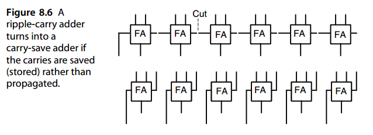
Figure 8.7 presents, in dot notation, the relationship shown in Fig. 8.6. To specify more precisely how the various dots are related or obtained, we agree to enclose any three dots that form the inputs to a FA in a dashed box and to connect the sum and carry outputs of an FA by a diagonal line (Fig. 8.8). Occasionally, only two dots are combined to form a sum bit and a carry bit. Then the two dots are enclosed in a dashed box and the use of a half-adder (HA) is signified by a cross line on the diagonal line connecting its outputs (Fig. 8.8).
图 8.7 以点表示法显示了图 8.6 中所示的关系。为了更精确地指定各个点是如何相关或获得的，我们同意将构成 FA 输入的任意三个点包含在虚线框中，并通过对角线连接 FA 的求和和进位输出（图 8.8）。有时，只有两个点组合起来形成和位和进位位。然后将两个点括在虚线框中，并通过连接其输出的对角线上的十字线来表示半加器 (HA) 的使用（图 8.8）。
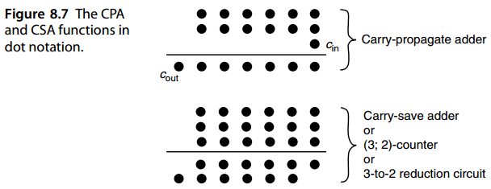
Dot notation s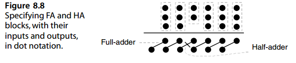uggests another way to view the function of a CSA: as converter of a radix-2 number with the digit set [0, 3] (3 bits in one position) to one with the digit set [0, 2] (2 bits in one position).
点表示法提出了另一种查看 CSA 功能的方法：将数字集 [0, 3]（3 比特一位）的基 2 数转换为数字集的[0, 2]（2比特一位 ）。
A CSA tree (Fig. 8.9) can reduce n binary numbers to two numbers having the same sum in O ( log n) levels. If a fast logarithmic-time carry-propagate adder (CPA) is then used to add the two resulting numbers, we have the following results for the cost and
CSA 树（图 8.9）可以将 n 个二进制数减少为 \(O ( \log n)\) 级中总和相同的两个数。如果随后使用快速对数时间进位传播加法器 (CPA) 将两个结果数相加，我们将得到以下成本和结果：
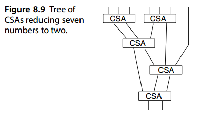
delay of n-operand addition:
n 操作数加法的延迟：
\(C_{carry−save−multi−add} = (n − 2)C_{CSA} + C_{CPA}\)
$T_{carry−save−multi−add} = O ( \text{tree height} + T_{CPA} ) = O (\log n + \log k) $
The needed CSAs are of various widths, but generally the widths are close to k bits; the CPA is of width at most k + log2 n. An example for adding seven 6-bit numbers is shown in Fig. 8.10. A more compact tabular representation of the same process is depicted in Fig. 8.11, where the entries represent the number of dots remaining in the respective columns or bit positions. We begin on the first row with seven dots in each of bit positions 0–5; these dots represent the seven 6-bit inputs. Two FAs are used in each 7-dot column, with each FA converting three dots in its column to one dot in that column and one dot in the next higher column. This leads to the distribution of dots shown on the second row of Fig. 8.11. Next, one FA is used in each of the bit positions 0–5 containing three dots or more, and so on, until no column contains more than two dots (see below for details). At this point, a CPA is used to reduce the resulting two numbers to the final 9-bit sum represented by a single dot in each of the bit positions 0–8.
所需的 CSA 具有各种宽度，但通常宽度接近 \(k\) 位； CPA 的宽度至多为 \(k + \log_2 n\)。七个 6 位数字相加的示例如图 8.10 所示。图 8.11 描绘了同一过程的更紧凑的表格表示，其中条目表示相应列或位位置中剩余的点数。我们从第一行开始，每个位位置 0-5 都有七个点；这些点代表七个 6 位输入。每个 7 点列中使用两个 FA，每个 FA 将其列中的三个点转换为该列中的一个点以及下一较高列中的一个点。这导致了图 8.11 第二行所示的点分布。接下来，在包含三个或更多点的位位置 0-5 中的每一个中使用一个 FA，依此类推，直到没有列包含超过两个点（详细信息请参见下文）。此时，CPA就是用于将所得的两个数字减少为最终的 9 位和，由每个位位置 0-8 中的一个点表示。
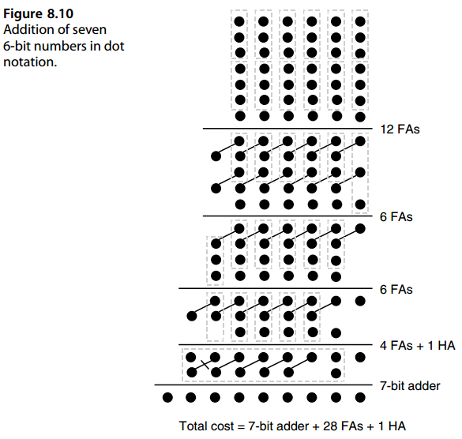
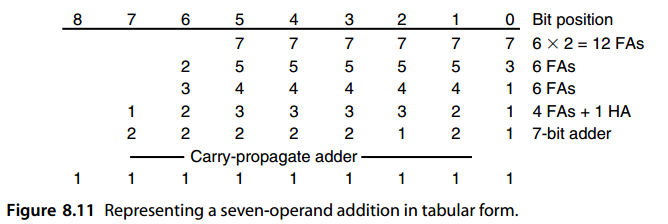
In deriving the entries of a row from those of the preceding one, we begin with column 0 and proceed to the leftmost column. In each column, we cast out multiples of 3 and for each group of three that we cast out, we include 1 bit in the same column and 1 bit in the next column to the left. Columns at the right that have already been reduced to 1 need no further reduction. The rightmost column with a 2 can be either reduced using an HA or left intact, postponing its reduction to the final CPA. The former strategy tends to make the width of the final CPA smaller, while the latter strategy minimizes the number of FAs and HAs at the expense of a wider CPA. In the example of Fig. 8.10, and its tabular form in Fig. 8.11, we could have reduced the width of the final CPA from 7 bits to 6 bits by applying an extra HA to the two dots remaining in bit position 1.
在从前一行的条目中派生出一行的条目时，我们从第 0 列开始并继续到最左边的列。在每一列中，我们输出 3 的倍数，对于我们输出的每组 3，我们在同一列中包含 1 位，在左侧的下一列中包含 1 位。右侧的列已减少到 1，无需进一步减少。最右边带有 2 的列可以使用 HA 进行缩减，也可以保持原样，将其缩减推迟到最终 CPA。前一种策略倾向于使最终 CPA 的宽度更小，而后一种策略则以更宽的 CPA 为代价最小化 FA 和 HA 的数量。在图例中。如图 8.10 所示，以及图 8.11 中的表格形式，我们可以通过对位位置 1 中剩余的两个点应用额外的 HA，将最终 CPA 的宽度从 7 位减少到 6 位。
Figure 8.12 depicts a block diagram for the carry-save addition of seven k-bit numbers. By tagging each line in the diagram with the bit positions it carries, we see that even though the partial sums do grow in magnitude as more numbers are combined, the widths of the CSAs stay pretty much constant throughout the tree. Note that the lowermost CSA in Fig. 8.12 could have been made only k − 1 bits wide by letting the two lines in bit position 1 pass through. The CPA would then have become k + 1 bits wide.
图 8.12 描述了 7 个 \(k\) 位数字的进位保存加法的框图。通过用它所携带的位位置来标记图中的每一行，我们可以看到，尽管随着更多数字的组合，部分和的大小确实会增长，但 CSA 的宽度在整个树中几乎保持不变。请注意，通过让位位置 1 中的两条线通过，可以使图 8.12 中最低的 CSA 仅具有 \(k − 1\) 位宽。那么 CPA 将变为 \(k + 1\) 位宽。
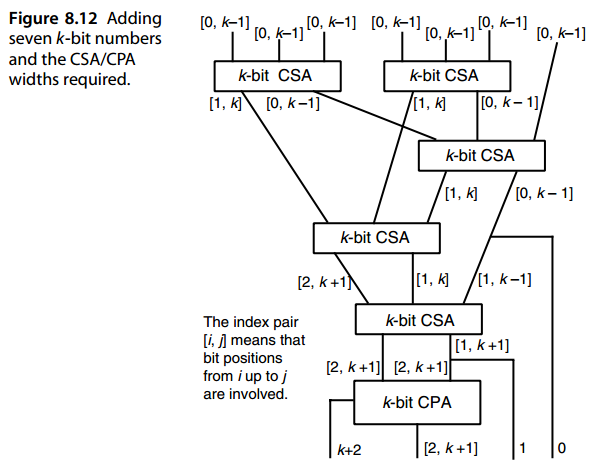
Carry-save addition can be implemented serially using a single CSA, as depicted in Fig. 8.13. This is the preferred method when the operands arrive serially or must be read out from memory one by one. Note, however, that in this case both the CSA and final CPA will have to be wider.
进位保存加法可以使用单个 CSA 串行实现，如图 8.13 所示。当操作数连续到达或必须从内存中逐一读出时，这是首选方法。但请注意，在这种情况下，CSA 和最终 CPA 都必须更宽。
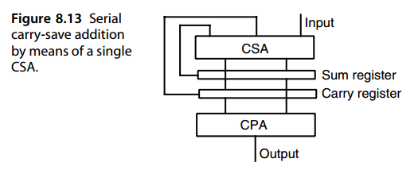
8.3 华莱土树与达达树¶
The CSA tree of Fig. 8.12, which reduces seven k-bit operands to two ( k +2 )-bit operands having the same sum, is known as a seven-input Wallace tree. More generally, an n-input Wallace tree reduces its k-bit inputs to two (k + log2 n − 1 )-bit outputs. Since each CSA reduces the number of operands by a factor of 1.5, the smallest height h(n) of an n-input Wallace tree satisfies the following recurrence:
图 8.12 的 CSA 树将七个 k 位操作数减少为具有相同和的两个 \((k+2)\) 位操作数，称为七输入华莱士树。更一般地，n 输入华莱士树将其 k 位输入减少为两个 \((k + \log_2 n − 1)\) 位输出。由于每个 CSA 将操作数数量减少 1.5 倍，因此 n 输入华莱士树的最小高度 \(h(n)\) 满足以下递归式：
Applying this recurrence provides an exact value for the height of an n-input Wallace tree. If we ignore the ceiling operator in the preceding equation and write it as h(n) = 1 + h( 2 n/ 3 ), we obtain a lower bound for the height, h(n) ≥ log (*1.5 *n/ 2 ), where equality occurs only for n = 2, 3. Another way to look at the preceding relationship between the number of inputs and the tree height is to find the maximum number of inputs n(h) that can be reduced to two outputs by an h-level tree. The recurrence for n( h) is
应用此递推式可以提供 n 输入华莱士树的高度的精确值。如果我们忽略上式中的上限算子，将其写为 \(h(n) = 1 + h( 2 n/ 3 )\)，我们得到高度的下界，\(h(n) ≥ \log_{1.5}(n/2)\)，其中相等仅当 \(n = 2, 3\) 时发生。查看输入数量与树高之间前述关系的另一种方法是找到可以通过 h 层树减少为两个输出的最大输入数量 n(h)。 n( h) 的递推式为
Again ignoring the floor operator, we obtain the upper bound n(h) ≤ 2 ( 3 / 2 )h. The lower bound n(h) > 2 ( 3 / 2 )h−1 is also easily established. The exact value of n(h) for 0 ≤ h ≤ 20 is given in Table 8.1.
再次忽略下取整运算符，我们得到上限 \(n(h) ≤ 2 ( 3 / 2 )^h\)。下界 \(n(h) > 2(3/2)^{h−1}\) 也很容易建立。表 8.1 给出了 \(0 ≤ h ≤ 20\) 时 \(n(h)\) 的精确值。
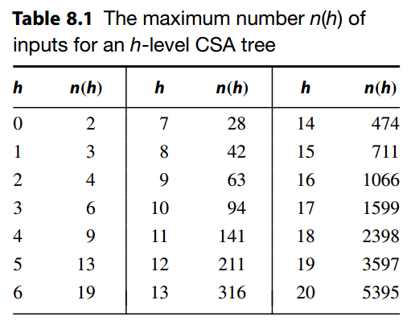
In Wallace trees, we reduce the number of operands at the earliest opportunity (see the example in Fig. 8.10). In other words, if there are m dots in a column, we immediately apply m/ 3 FAs to that column. This tends to minimize the overall delay by making the final CPA as short as possible.
在华莱士树中，我们尽早减少操作数的数量（参见图 8.10 中的示例）。换句话说，如果一列中有 m 个点，我们立即将 \(\left \lfloor m/3 \right \rfloor\) 个 FA 应用于该列。通过使最终 CPA 尽可能短，可以最大限度地减少总体延迟。
However, the delay of a fast adder is usually not a smoothly increasing function of the word width. A carry-lookahead adder, for example, may have essentially the same delay for word widths of 17–32 bits. In Dadda trees, we reduce the number of operands to the next lower value of n(h) in Table 8.1 using the fewest FAs and HAs possible. The justification is that seven, eight, or nine operands, say, require four CSA levels; thus there is no point in reducing the number of operands below the next lower n( h) value in the table, since this would not lead to a faster tree.
然而，快速加法器的延迟通常不是字宽的平滑增加函数。例如，超前进位加法器对于 17~32 位字宽可能具有基本相同的延迟。在 Dadda 树中，我们使用尽可能少的 FA 和 HA 将操作数的数量减少到表 8.1 中的下一个较低的 \(n(h)\) 值。理由是七个、八个或九个操作数需要四个 CSA 级别；因此，减少表中下一个较低的 n(h) 值以下的操作数数量是没有意义的，因为这不会导致更快的树。
Let us redo the example of Fig. 8.10 by means of Dadda’s strategy. Figure 8.14 shows the result. We start with seven rows of dots, so our first task is to reduce the number of rows to the next lower n(h) value (i.e., 6). This can be done by using 6 FAs; next, we aim for four rows, leading to the use of 11 FAs, and so on. In this particular example, the Wallace and Dadda approaches result in the same number of FAs and HAs and the same width for the CPA. Again, the CPA width could have been reduced to 6 bits by using an extra HA in bit position 1.
让我们用Dadda的策略重做图8.10的例子。图 8.14 显示了结果。我们从七行点开始，所以我们的首要任务是减少点的数量行到下一个较低的 n(h) 值（即 6）。这可以通过使用 6 个 FA 来完成；接下来，我们的目标是四行，从而使用 11 个 FA，依此类推。在此特定示例中，Wallace 和 Dadda 方法会产生相同数量的 FA 和 HA，以及相同的 CPA 宽度。同样，通过在位位置 1 中使用额外的 HA，CPA 宽度可以减少到 6 位。
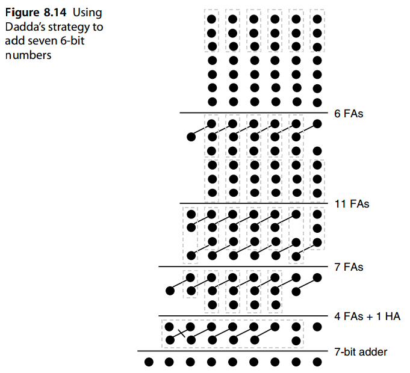
Since a CPA has a carry-in signal that can be used to accommodate one of the dots, it is sometimes possible to reduce the complexity of the CSA tree by leaving three dots in the least-significant position of the adder. Figure 8.15 shows the same example as in Figs. 8.10 and 8.14, but with two FAs replaced with HAs, leaving an extra dot in each of the bit positions 1 and 2.
由于 CPA 具有进位信号，可用于容纳其中一个点，因此有时可以通过保留三个点来降低 CSA 树的复杂性在加法器的最低有效位置。图 8.15 显示了与图 8.15 相同的示例。 8.10 和 8.14，但用 HA 替换两个 FA，在位位置 1 和 2 中各留下一个额外的点。
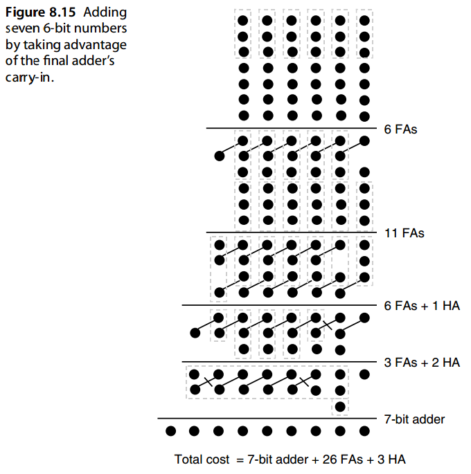
8.4 并行计数器与并行压缩器¶
A 1-bit FA is sometimes referred to as a \((3; 2)\)-counter, meaning that it counts the number of 1s among its 3 input bits and represents the result as a 2-bit number. This can be easily generalized: an \((n; \left\lceil \log_2(n+1)\right \rceil)\)-counter has n inputs and produces a \(\left\lceil \log_2(n+1)\right \rceil\)-bit binary output representing the number of 1s among its n inputs. Such a circuit is also known as an n-input parallel counter.
1 位 FA 有时称为 \((3; 2)\)-计数器，这意味着它计算 3 个输入位中 1 的数量，并将结果表示为 2 位数字。这可以很容易地推广： \((n; \left\lceil \log_2(n+1)\right \rceil)\)计数器有 n 个输入，并产生一个\(\left\lceil \log_2(n+1)\right \rceil\)-位二进制输出，表示其 n 个输入中 1 的数量。这种电路也称为 n 输入并行计数器。
A 10-input parallel counter, or a (10; 4)-counter, is depicted in Fig. 8.16 in terms of both dot notation and circuit diagram with FAs and HAs. A row of such (10; 4)-counters, one per bit position, can reduce a set of 10 binary numbers to 4 binary numbers. The dot notation representation of this reduction is similar to that of (3; 2)-counters, except that each diagonal line connecting the outputs of a (10; 4)-counter will go through four dots. A (7; 3)-counter can be similarly designed.
图 8.16 中用点表示法和带有 FA 和 HA 的电路图描述了 10 输入并行计数器或 \((10; 4)\) 计数器。一排这样的 \((10; 4)\) 计数器，每个位位置一个，可以将一组 10 个二进制数减少到 4 个二进制数。这种归约的点表示法与 \((3; 2)\) 计数器的点表示法类似，只是连接 (10; 4) 计数器输出的每条对角线将经过四个点。(7;3)计数器可以类似地设计。
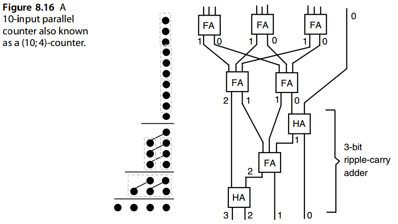
Even though a circuit that counts the number of 1s among n inputs is known as a parallel counter, we note that this does not constitute a true generalization of the notion of a sequential counter. A sequential counter receives 1 bit (the count signal) and adds it to a stored count. A parallel counter, then, could have been defined as a circuit that receives n count signals and adds them to a stored count, thus in effect incrementing the count by the sum of the input count signals. Such a circuit has been called an “accumulative parallel counter” [Parh95]. An accumulative parallel counter can be built from a parallel incrementer (a combinational circuit receiving a number and producing the sum of the input number and n count signals at the output) along with a storage register.
尽管计算 n 个输入中 1 的数量的电路被称为并行计数器，但我们注意到这并不构成顺序计数器概念的真正概括。顺序计数器接收 1 位（计数信号）并将其添加到存储的计数中。那么，并行计数器可以定义为接收 n 个计数信号并将它们添加到存储的计数中的电路，从而实际上将计数增加了输入计数信号的总和。这样的电路被称为“累积并行计数器”[Parh95]。累积并行计数器可以由并行增量器（接收数字并在输出处产生输入数字和 n 个计数信号之和的组合电路）和存储寄存器来构建。
Both parallel and accumulative parallel counters can be extended by considering signed count signals. These would constitute generalizations of sequential up/down counters [Parh89]. Accumulative and up/down parallel counters have been applied to the design of efficient Hamming weight comparators, circuits that are used to decide whether the number of 1s in a given bit-vector is greater than or equal to a threshold, or to determine which of two bit-vectors contains more 1s [Parh09].
并行和累积并行计数器都可以通过考虑有符号计数信号来扩展。这些将构成顺序加/减计数器的概括[Parh89]。累加和向上/向下并行计数器已应用于高效汉明权重比较器的设计，该电路用于确定给定位向量中 1 的数量是否大于或等于阈值，或确定两个位向量中哪一个包含更多 1 [Parh09]。
A parallel counter reduces a number of dots in the same bit position into dots in different positions (one in each). This idea can be easily generalized to circuits that receive “dot patterns” (not necessarily in a single column) and convert them to other dot patterns (not necessarily one in each column). If the output dot pattern has fewer dots than the input dot pattern, compression takes place; repeated use of such circuits can eventually lead to the reduction of n numbers to a small set of numbers (ideally two).
并行计数器将同一位位置上的多个点减少为不同位置上的点（每个点一个）。这个想法可以很容易地推广到接收“点图案”（不一定在单列中）并将其转换为其他点图案（不一定在每一列中）的电路。如果输出点图案的点数少于输入点图案的点数，则进行压缩；重复使用这样的电路最终可以将n个数字减少到一小组数字（最好是两个）。
A generalized parallel counter (parallel compressor) is characterized by the number of dots in each input column and in each output column. We do not consider such circuits in their full generality but limit ourselves to those that output a single dot in each column. Thus, the output side of such parallel compressors is again characterized by a single integer representing the number of columns spanned by the output. The input side is characterized by a sequence of integers corresponding to the number of inputs in various columns.
广义并行计数器（并行压缩器）的特征在于每个输入列和每个输出列中的点数。我们并不考虑此类电路的全部普遍性，而是将自己限制在每列中输出单个点的电路。因此，这种并行压缩器的输出侧再次由表示输出跨越的列数的单个整数来表征。输入侧的特征是与各列中的输入数量相对应的整数序列。
For example, a (4, 4; 4)-counter receives 4 bits in each of two adjacent columns and produces a 4-bit number representing the sum of the four 2-bit numbers received. Similarly, a (5, 5; 4)-counter, depicted in Fig. 8.17, reduces five 2-bit numbers to a 4-bit number. The numbers of input dots in various columns do not have to be the same. For example, a (4, 6; 4)-counter receives 6 bits of weight 1 and 4 bits of weight 2 and delivers their weighted sum in the form of a 4-bit binary number. For a counter of this type to be feasible, the sum of the output weights must equal or exceed the sum of its input weights. In other words, if there are \(n_j\) dots in each of h input columns, \(0 ≤ j ≤ h − 1\), the associated generalized parallel counter, denoted as \(( n_{h−1}, ..., n_1, n_0; k)\)-counter, is feasible only if \(\sum(n_j 2^j) ≤ 2^k − 1\).
例如，(4, 4; 4) 计数器接收两个相邻列中每一列中的 4 位，并生成表示接收到的四个 2 位数字之和的 4 位数字。类似地，图 8.17 中所示的 (5, 5; 4) 计数器将五个 2 位数字减少为 4 位数字。各列中的输入点的数量不必相同。例如，(4, 6; 4) 计数器接收 6 位权重 1 和 4 位权重 2，并以 4 位二进制数的形式传送它们的加权和。为了使这种类型的计数器可行，输出权重的总和必须等于或超过其输入权重的总和。换句话说，如果 h 个输入列中的每一列中有 \(n_j\) 个点，\(0 ≤ j ≤ h − 1\)，则关联的广义并行计数器，表示为 \(( n_{h−1}, ..., n_1, n_0; k)\) 计数器，仅当\(\sum(n_j 2^j) ≤ 2^k − 1\)时才可行。
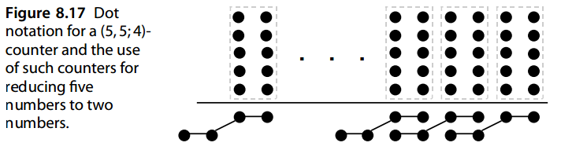
Generalized parallel counters are quite powerful. For example, a 4-bit binary FA is really a (2, 2, 2, 3; 5)-counter.
广义并行计数器非常强大。例如，4 位二进制 FA 实际上是一个 (2, 2, 2, 3; 5) 计数器。
Since our goal in multioperand carry-save addition is to reduce n numbers to two numbers, we sometimes talk of ( n; 2)-counters, even though, with our preceding definition, this does not make sense for n > 3. By an ( n; 2)-counter, n > 3, we usually mean a slice of a circuit that helps us reduce n numbers to two numbers when suitably replicated. Slice i of the circuit receives n input bits in position i, plus transfer or “carry” bits from one or more positions to the right ( i − 1, i − 2, etc.), and produces output bits in the two positions i and i + 1 plus transfer bits into one or more higher positions ( i + 1, i + 2, etc.).
由于我们在多操作数进位保存加法中的目标是将 n 个数字减少到两个数字，因此我们有时会谈论 \((n; 2)\) 计数器，尽管根据我们前面的定义，这对于 n > 3 来说没有意义。通过 \(( n; 2)\) 计数器，n > 3，我们通常指的是电路的一个切片，在适当复制时可以帮助我们将 n 个数字减少到两个数字。电路的切片 \(i\) 在位置 \(i\) 接收 \(n\) 个输入位，加上从一个或多个位置向右传输或“进位”位（\(i − 1\)、\(i − 2\) 等），并在两个位置 \(i\) 和 \(i + 1\) 中产生输出位，加上将位传输到一个或多个更高位置（\(i + 1\)、\(i + 2\) 等）。
Figure 8.18 shows the block diagram of an ( n; 2)-counter, composed of k identical circuit slices with horizontal interconnections among them. Each slice combines n input bits with a number of carries coming from slices to its right, producing 2 output bits along with carries that are sent to its left. If ψj denotes the number of transfer bits from slice i to slice i + j, the fundamental inequality to be satisfied for this scheme to work is
图8.18显示了(n;2)计数器的框图，该计数器由k个相同的电路片组成，并且它们之间具有水平互连。每个片将 n 个输入位与来自其右侧片的多个进位组合起来，产生 2 个输出位以及发送到其左侧的进位。如果 \(ψj\) 表示传输位数将 i 切片到 i + j 切片，该方案工作需要满足的基本不等式为
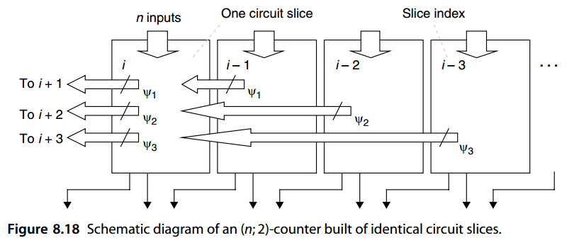
\(n + ψ 1 + ψ 2 + ψ 3 + · · · ≤ 3 + 2 ψ 1 + 4 ψ 2 + 8 ψ 3 + · · ·\)
where 3 represents the maximum value of the 2 output bits. For example, a (7; 2)-counter can be built by allowing ψ 1 = 1 transfer bit from position i to position i + 1 and ψ 2 = 1 transfer bit into position i + 2. For maximum speed, the circuit slice must be designed in such a way that transfer signals are introduced as close to the circuit’s outputs as possible, to prevent the transfers from rippling through many stages. Design of a (7; 2)-counter using these principles is left as an exercise.
其中 3 表示 2 个输出位的最大值。例如，可以通过允许 \(ψ 1 = 1\) 将位从位置 \(i\) 传输到位置 \(i + 1\) 且 \(ψ 2 = 1\) 来构建 (7; 2) 计数器将位传输到位置 \(i + 2\)。为了获得最大速度，电路切片的设计方式必须使传输信号尽可能靠近电路的输出引入，以防止传输在多个级中产生纹波。使用这些原理设计 (7; 2) 计数器留作练习。
For n = 4, a (4; 2)-counter can be synthesized with ψ 1 = 1, that is, with 1 carry bit between adjacent slices. An efficient circuit realization for such a counter will be presented in Section 11.2, in connection with reduction circuits for parallel multipliers organized as binary trees (see Fig. 11.5).
对于 \(n = 4\)，可以用 \(ψ 1 = 1\) 合成 (4; 2) 计数器，即相邻片之间有 1 个进位位。这种计数器的有效电路实现将在第 11.2 节中介绍，并结合以二叉树形式组织的并行乘法器的简化电路（见图 11.5）。
8.5 多个有符号数之和¶
When the operands to be added are 2’s-complement numbers, they must be sign-extended to the width of the final result if multiple-operand addition is to yield their correct sum. The example in Fig. 8.19 shows extension of the sign bits xk−1, yk−1, and zk−1 across five extra positions.
当要相加的操作数是 2 的补码数字时，如果多操作数相加要产生正确的和，则必须对它们进行符号扩展至最终结果的宽度。图 8.19 中的示例显示了符号位 \(x_{k−1}\)、\(y_{k−1}\) 和 \(z_{k−1}\) 跨五个额外位置的扩展。
It appears, therefore, that sign extension may dramatically increase the complexity of the CSA tree used for n-operand addition when n is large. However, since the sign extension bits are identical, a single FA can do the job of several FAs that would be receiving identical inputs if used. With this hardware-sharing scheme, the CSA widths are only marginally increased. For the three operands in Fig. 8.19a, a single (3; 2)-counter can be used in lieu of six that would be receiving the same input bits xk−1, yk−1, and zk−1.
因此，当 n 很大时，符号扩展可能会显着增加用于 n 操作数加法的 CSA 树的复杂性。然而，由于符号扩展位是相同的，因此单个 FA 可以完成多个 FA 的工作，这些 FA 在使用时将接收相同的输入。通过这种硬件共享方案，CSA 宽度仅略有增加。对于图 8.19a 中的三个操作数，单个 (3; 2)-计数器可以用来代替接收相同输入位 xk−1、yk−1 和 zk−1 的 6 个计数器。
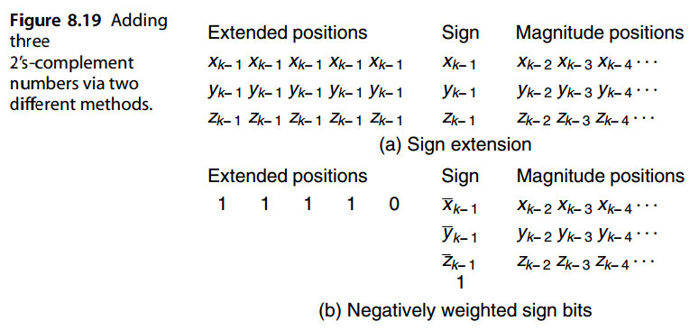
It is possible to avoid sign extension by taking advantage of the negative-weight interpretation of the sign bit in 2’s-complement representation. A negative sign bit − xk−1 can be replaced by 1 − xk−1 = ¯ xk−1 (the complement of xk−1), with the extra 1 canceled by inserting a −1 in that same column. Multiple −1s in a given column can be paired, with each pair replaced by a −1 in the next higher column. Finally, a solitary −1 in a given column is replaced by 1 in that column and −1 in the next higher column. Eventually, all the −1s disappear off the left end and at most a single extra 1 is left in some of the columns.
通过利用 2 补码表示中符号位的负权重解释，可以避免符号扩展。负号位 \(−x_{k−1}\)可以替换为 \(1 − x_{k−1} = \bar{x}_{k−1}\) （\(x_{k−1}\) 的补码），通过在同一列中插入 −1 来取消额外的 1。给定列中的多个 -1 可以配对，每对都被下一个较高列中的 -1 替换。最后，给定列中的单个 -1 被该列中的 1 以及下一个较高列中的 -1 替换。最终，所有 -1 从左端消失，并且在某些列中最多留下一个额外的 1。
Figure 8.19b shows how this method is applied when adding three 2’s-complement numbers. The three sign bits are complemented and three −1s are inserted in the sign position. These three −1s are then replaced by a 1 in the sign position and two −1s in the next higher position ( k). These two −1s are then removed and, instead, a single −1 is inserted in position k + 1. The latter −1 is in turn replaced by a 1 in position k + 1 and a −1 in position k + 2, and so on. The −1 that moves out from the leftmost position is immaterial in view of ( k + 5)-bit 2’s-complement arithmetic being performed modulo 2 k+5.
图 8.19b 显示了在三个 2 的补码相加时如何应用此方法。三个符号位被补码并在符号位置插入三个-1。然后，这三个 -1 在符号位置被替换为 1，并在下一个更高位置 (k) 被替换为两个 -1。然后，这两个 -1 被移除，取而代之的是一个 -1 被插入到位置 k + 1 中。后者的 -1 依次被位置 k + 1 中的 1 和位置 k + 2 中的 -1 替换，依此类推。鉴于以 \(2^{k+5}\) 为模执行 ( k + 5) 位 2 的补码算术，从最左边位置移出的 -1 并不重要。
8.6 多操作数模加法器¶
For the same reasons offered for modular two-operand addition in Section 7.6, on occasion we need to add n numbers modulo a given constant m. An obvious approach would be to perform the required computation in two stages: (1) Forming the proper sum of the input operands, using any of the multioperand adder designs described thus far, and (2) reducing the sum modulo m. In many cases, however, we can obtain more efficient designs by merging (interlacing) the addition and modular reduction operations.
出于与第 7.6 节中模二操作数加法相同的原因，有时我们需要对给定常量 m 进行模加 n 个数字。一种明显的方法是分两个阶段执行所需的计算：（1）使用迄今为止描述的任何多操作数加法器设计形成输入操作数的正确总和，以及（2）以 m 为模减少总和。然而，在许多情况下，我们可以通过合并（交错）加法和模约简操作来获得更有效的设计。
As in the case of two-operand addition, the three special moduli 2 k , 2 k − 1, and 2 k + 1 are easier to deal with. For m = 2 k , we simply drop any bit that is produced in column k. This simplification is depicted in Fig. 8.20a. Thus, for example, no CSA in Fig. 8.12 needs to extend past position k − 1 in this case. For m = 2 k − 1, a bit generated in position k is reinserted into position 0, as shown in Fig. 8.20b. Given the empty slot available in position 0, this “end-around carry” does not lead to an increase in latency. In the case of m = 2 k + 1, assuming nonzero operands with diminished-1 encoding, the arguments presented in Example 7.3 suggest that an inverted end-around carry (Fig. 8.20c) allows the conversion of three diminished-1 inputs to two diminished-1 outputs.
与双操作数加法的情况一样，三个特殊模 \(2^k\) 、\(2^k − 1\) 和 \(2^k + 1\) 更容易处理。对于 \(m = 2^k\) ，我们只需删除 k 列中生成的任何位即可。这种简化如图 8.20 a 所示。因此，例如，在这种情况下，图 8.12 中的 CSA 不需要延伸超过位置 k - 1。对于 \(m = 2^k − 1\)，在位置 k 生成的位被重新插入到位置 0，如图 8.20 b 所示。考虑到位置 0 处有可用的空槽，这种“末端循环进位”不会导致延迟增加。在 \(m = 2^k + 1\) 的情况下，假设非零操作数减 1编码，例 7.3 中提出的论点表明，反转的末端循环进位（图 8.20 c）允许将三个减 1 输入转换为两个减 1输出。
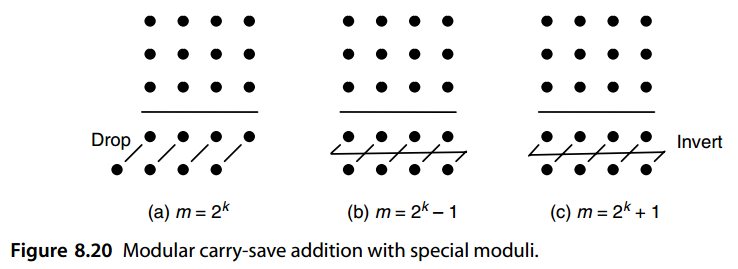
For a general modulus m, we need multioperand addition schemes that are more elaborate than (inverted) end-around carry. Many techniques have been developed for specific values of m. For example, if m is such that 2 h = 1 mod m for a fairly small value of h, one can perform tree reduction with h-bit pseudoresidues (see Section 4.5) and end-around carry [Pies94]. To apply this method to mod-21 addition of a set of n input integers in the range [0, 20], we can use any tree reduction scheme, while keeping all intermediate values in the range [0, 63]. Bits generated in column 6 are then fed back to column 0 in the same manner as the end-around carry used for modulo-63 reduction, given that 64 = 1 mod 21. Once all operands have been combined into two 6-bit values, the latter are added with end-around carry and the final 6-bit sum is reduced modulo 21. Figure 8.21 depicts an example with n = 6.
对于一般模数 m，我们需要比（反向）端循环进位更复杂的多操作数加法方案。针对特定的 m 值，已经开发了许多技术。例如，如果 m 使得 \(2^h = 1 \mod m\) 对于相当小的 h 值，则可以使用 h 位伪余数（参见第 4.5 节）和结束进位执行树缩减 [Pies94]。要将此方法应用于 [0, 20] 范围内的一组 n 个输入整数的 mod-21 加法，我们可以使用任何树缩减方案，同时将所有中间值保持在 [0, 63] 范围内。然后，第 6 列中生成的位将反馈到第 0 列，其方式与用于模 63 归约的结束进位相同，假设 \(64 = 1 \mod 21\)。一旦所有操作数组合成两个 6 位值，后者就会与结束进位相加，最后的 6 位和会减少模 21。图 8.21 描述了 \(n = 6\) 的示例。
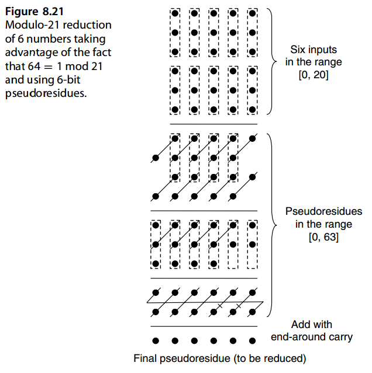
问题（略）¶
参考文献和进一步阅读¶
[Dadd65] Dadda, L., “Some Schemes for Parallel Multipliers,” Alta Frequenza, Vol. 34,
pp. 349–356, 1965.
[Dadd76] Dadda, L., “On Parallel Digital Multipliers,” Alta Frequenza, Vol. 45, pp. 574–580,
1976.
[De94] De, M., and B. P. Sinha, “Fast Parallel Algorithm for Ternary Multiplication Using
Multivalued I2L Technology,” IEEE Trans. Computers, Vol. 43, No. 5, pp. 603–607,
1994.
[Didi04] Didier, L. S., and P.-Y. H. Rivaille, “A Comparative Study of Modular Adders,”
Advanced Signal Processing Algorithms, Architectures, and Implementations XIV
(Proc. SPIE Conf.), 2004, pp. 13–20.
[Fior99] Fiore, P. D., “Parallel Multiplication Using Fast Sorting Networks,” IEEE Trans.
Computers, Vol. 48, No. 6, pp. 640–645, 1999.
[Fost71] Foster, C. C., and F. D. Stockton, “Counting Responders in an Associative Memory,”
IEEE Trans. Computers, Vol. 20, pp. 1580–1583, 1971.
[Kore03] Koren, I., Y. Koren, and B. G. Oomman, “Saturating Counters: Application and Design
Alternatives,” Proc. 16th IEEE Symp. Computer Arithmetic, pp. 228–235, 2003.
[Parh89] Parhami, B., “Parallel Counters for Signed Binary Signals,” Proc. 23rd Asilomar
Conf. Signals, Systems, and Computers, pp. 513–516, 1989.
[Parh95] Parhami, B., and C.-H. Yeh, “Accumulative Parallel Counters,” Proc. 29th Asilomar
Conf. Signals, Systems, and Computers, pp. 966–970, 1995.
[Parh99] Parhami, B., Introduction to Parallel Processing: Algorithms and Architectures,
Plenum, 1999.
[Parh09] Parhami, B., “Efficient Hamming Weight Comparators for Binary Vectors Based on
Accumulative and Up/Down Parallel Counters,” IEEE Trans. Circuits and Systems II,
Vol. 56, No. 2, pp. 167–171, 2009.
[Pies94] Piestrak, S. J., “Design of Residue Generators and Multioperand Modular Adders
Using Carry-Save Adders,” IEEE Trans. Computers, Vol. 43, No. 1, pp. 68–77, 1994.
[Shim97] Shim, D., and W. Kim, “The Design of 16 × 16 Wave Pipelined Multiplier Using
Fan-In Equalization Technique,” Proc. Midwest Symp. Circuits & Systems, Vol. 1, pp.
336–339, 1997.
[Swar73] Swartzlander, E. E., “Parallel Counters,” IEEE Trans. Computers, Vol. 22, No. 11,
pp. 1021–1024, 1973.
[Wall64] Wallace, C. S., “A Suggestion for a Fast Multiplier,” IEEE Trans. Electronic
Computers, Vol. 13, pp. 14–17, 1964.
[Wang96] Wang, Z., G. A. Jullien, and W. C. Carter, “An Efficient Tree Architecture for Modulo
2n + 1 Multiplication,” J. VLSI Signal Processing, Vol. 14, No. 3, pp. 241–248, 1996.